14 Jugadors Top del FC Barcelona
- Lamine Yamal – 17 anys, 40 gols. Jove joia de La Masia.
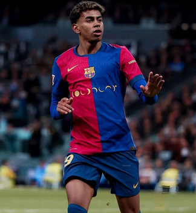
- Leo Messi – 36 anys, 672 gols. Màxim golejador històric del club.
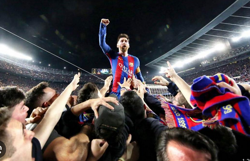
- Ronaldinho – Ídol mundial, clau en la revolució del Barça modern.
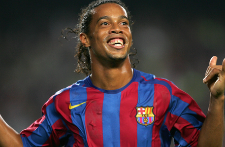
- Xavi Hernández – 700+ partits. Cervell del millor Barça.
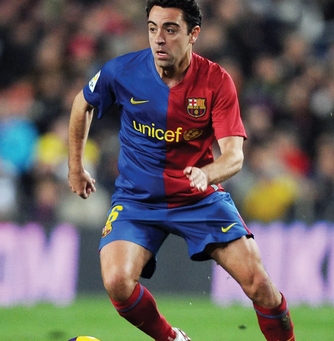
- Andrés Iniesta – Clau en Champions i Mundials. Mag del mig del camp.
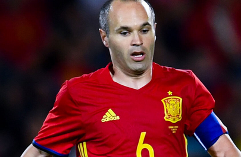
- Carles Puyol – Capità i símbol de caràcter i lideratge.
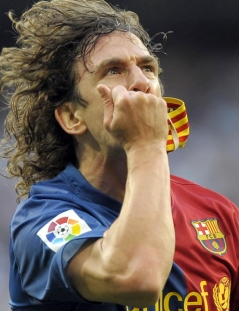
- Gerard Piqué – Defensa clau en tres Champions.
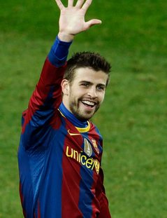
- Neymar Jr. – Part del trident històric MSN.
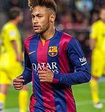
- Luis Suárez – 198 gols. Davanter letal en l’era Messi.
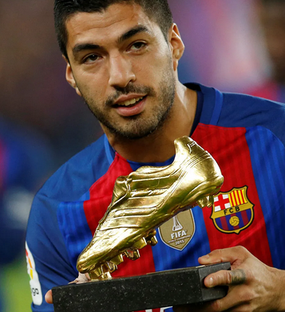
- Ronald Koeman – Defensa golejador. Heroi de Wembley 1992.
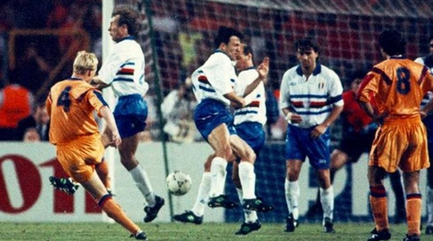
- Johan Cruyff – Llegenda com a jugador i arquitecte de l’estil Barça.
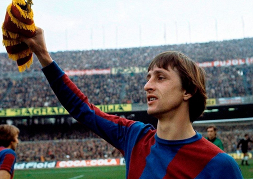
- Sergio Busquets – Pivot elegant. Més de 700 partits amb el club.
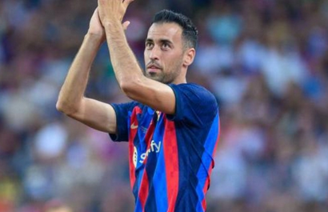
- Marc-André ter Stegen – Porter modern, vital en les últimes lligues.
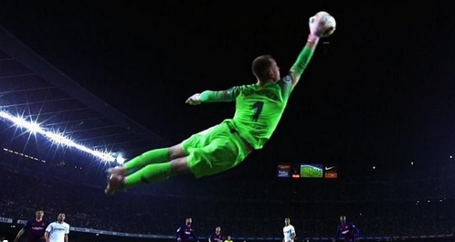
- Raphinha – Extrem ràpid amb gol i entrega.
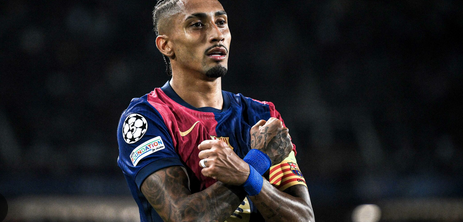